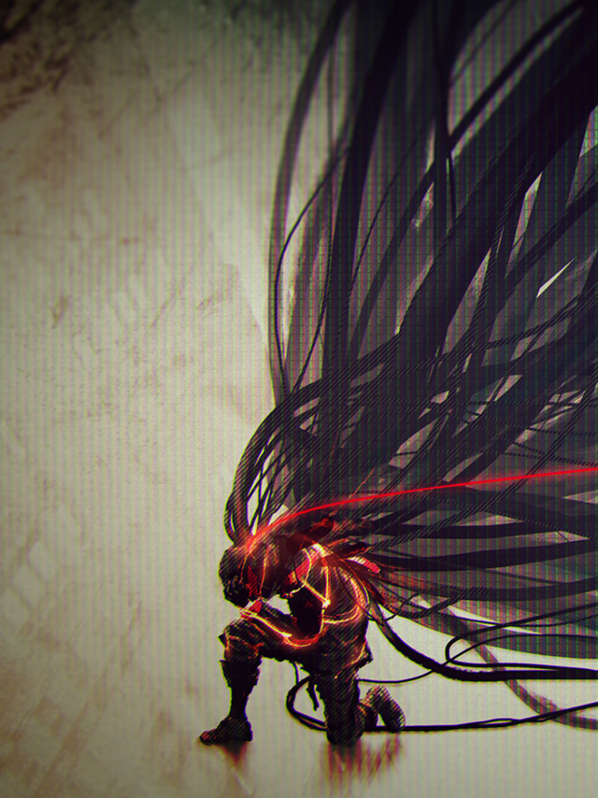

Game
Scarlet Nexus
2 599 ₽
Об этой игре

Далекое будущее. В человеческом мозге обнаружен псионный гормон, наделивший людей экстрасенсорными способностями и полностью изменивший привычный нам мир. Но едва свет новой эпохи озарил человечество, с небес начали сходить жаждущие мозгов и утратившие рассудок мутанты, которых назвали Иными. Они были невероятно устойчивы к обычному оружию, и, чтобы справиться с угрозой и спасти человечество, миру потребовались бойцы совершенно нового уровня. Псионики, обладатели экстрасенсорных способностей, стали единственными, кто мог дать отпор внеземной угрозе. С тех пор псиоников искали по всему миру и вербовали в Отряд Подавления Иных (ОПИ), ставший последним бастионом человечества.

Начните прохождение игры с одного из двух персонажей, у каждого из которых есть своя история. Юито Сумераги — полный энтузиазма новобранец из влиятельной семьи политиков. Касанэ Рэндалл давно состоит в ОПИ, ее сила и опыт помогли ей заслужить уважение. Лишь когда их истории сплетутся, вам откроется во всей полноте история SCARLET NEXUS, и вы узнаете все тайны будущего в стиле «брейнпанк» на стыке технологий и псионики.

Бои на основе телекинеза: с телекинетическими способностями все вокруг становится оружием. Поднимайте, ломайте и швыряйте предметы, чтобы проводить серии атак и сокрушать врагов.
Истребление Иных: потерявшие рассудок мутанты, спустившиеся с небес, обладают невероятной устойчивостью к обычным боевым приемам. Во время мутации они испытывали нескончаемую боль и теперь, чтобы заглушить свое безумие, начали охоту за мозгами.
Будущее в стиле «брейнпанк»: исследуйте и защищайте просторы Японии будущего, в которых слились мотивы классического аниме и западной научной фантастики.
Глубокий захватывающий сюжет: запутанная история о человеческих отношениях, отваге и героизме от создателей культовой Tales of Vesperia.
